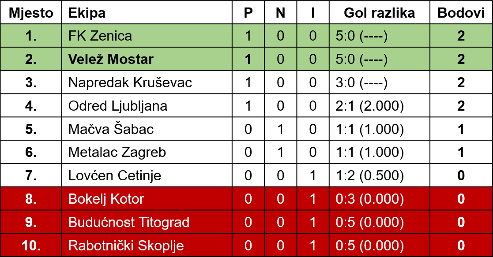
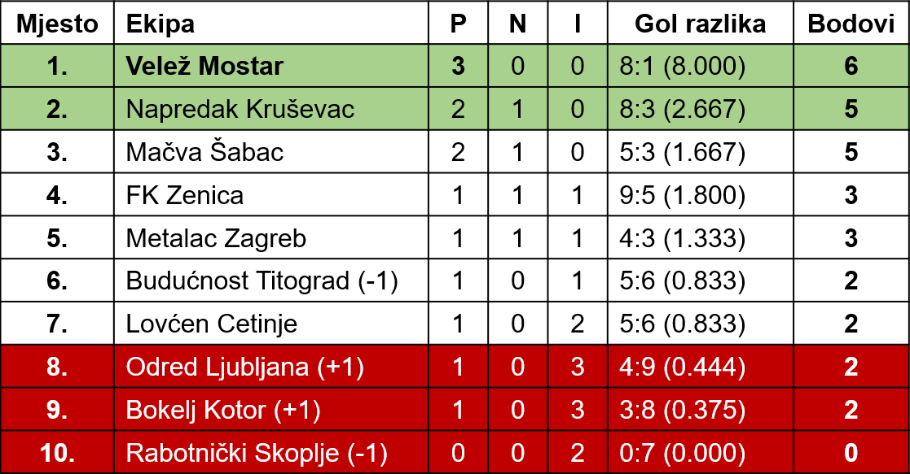
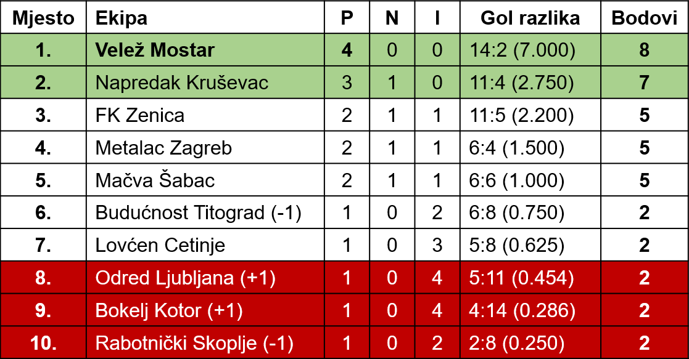
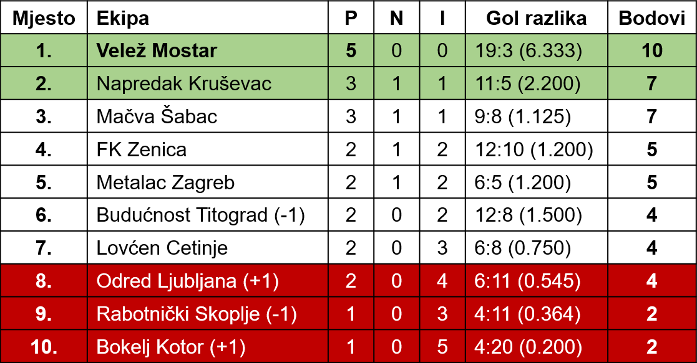
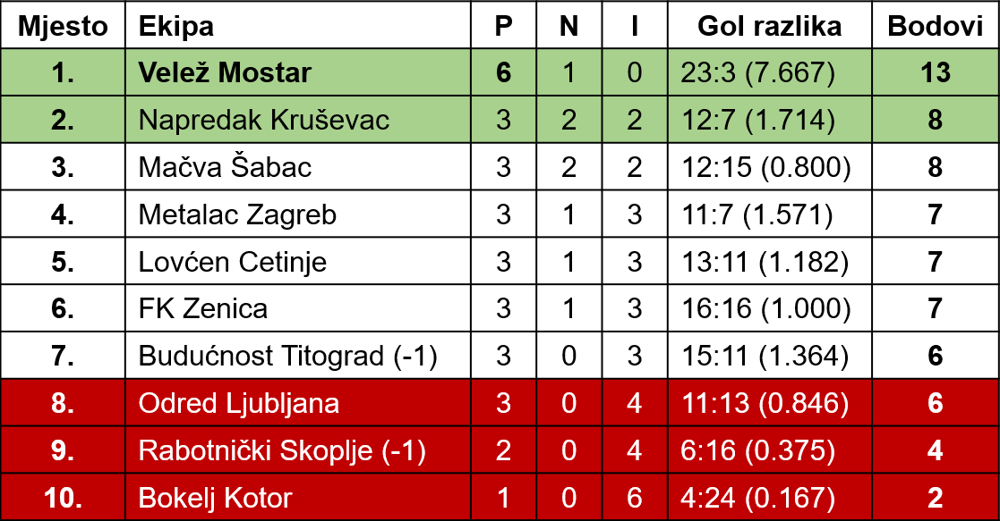
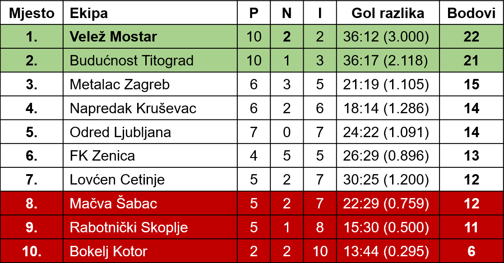
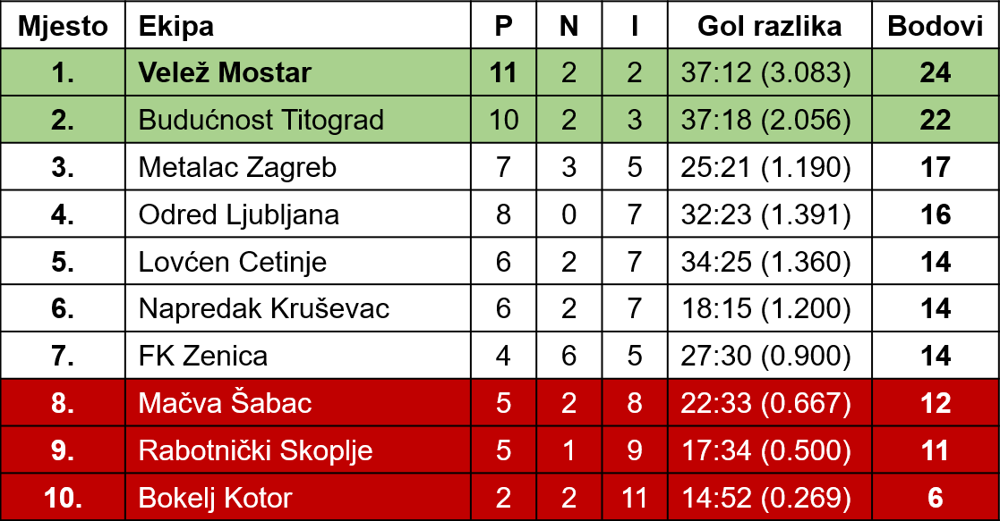
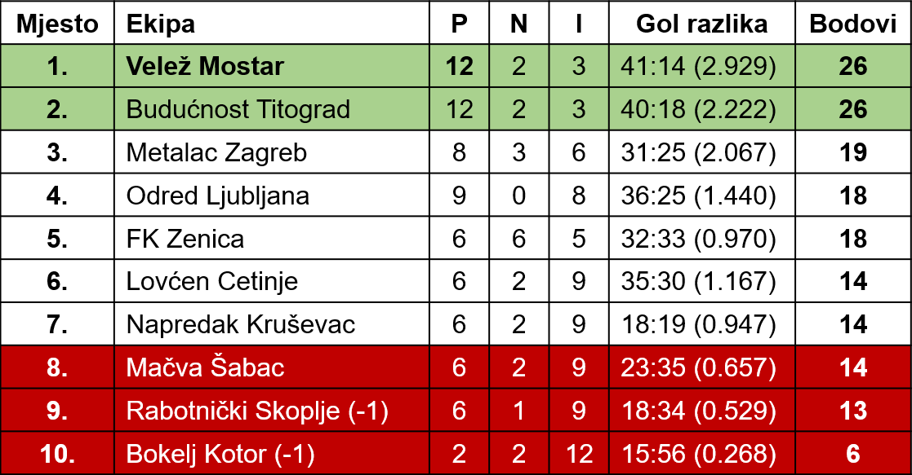
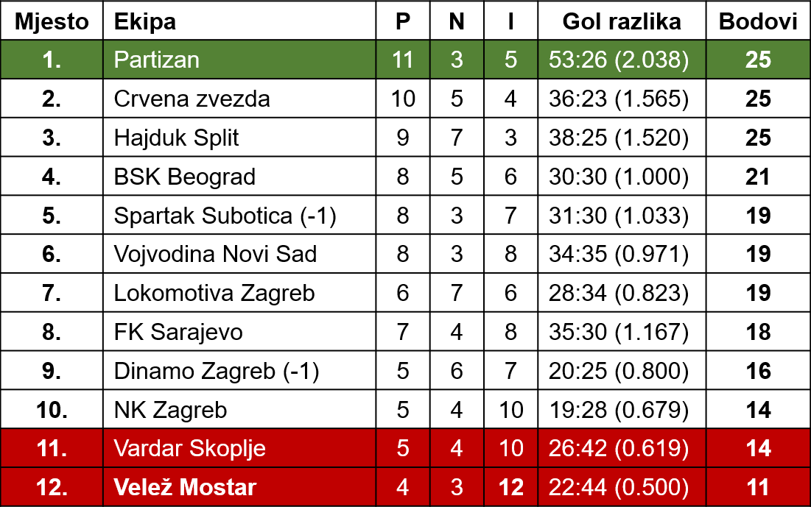
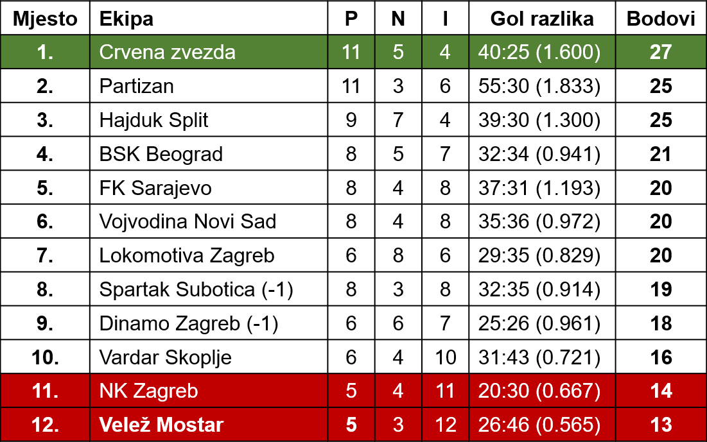

Stoje: Ismet Šišić, Veselin Đurasović, Nenad Bijedić, Vladimir Matijević, Enver Marić, Avdo Kalajdžić
Čuče: Sead Kajtaz, Ivica Barbarić, Dušan Bajević, Franjo Vladić, Semir Tuce
Stoje: Ismet Šišić, Veselin Đurasović, Nenad Bijedić, Vladimir Matijević, Enver Marić, Avdo Kalajdžić
Čuče: Sead Kajtaz, Ivica Barbarić, Dušan Bajević, Franjo Vladić, Semir Tuce
Sezona 1982-83
Uskoro na ovoj stranici:Rezime sezoneEkskluzivne slike sa tekmiProtokol (zapisnik) utakmicaTabele iz kola u koloDetaljni izvještaji sa terena
Dobar početak
„Velež” — „Budućnost” 5:0 (2:0)
Već u drugoj minuti »Velež« postiže gol. Akcija je počela od Radiljevića. Loptu je vrlo lijepo dodao Selimotiću, a ovaj još ljepše Zeleniki, koji je izvanrednim šutem šalje u mrežu. To je bila brza i uspjela akcija. Poslije toga se vjerovalo da će gosti položiti oružje. Ali do toga nije odmah došlo. Oni su počeli da izvode protunapade. U 8 minuti, Irović je bio prisiljen da boksovanjem izbaci loptu u polje. Malo kasnije Darmanović I uspio je da prodre do pred sam gol, ali je lopta prošla više stative. To je bila idealna prilika za postizanje gola. Tek pred kraj prvog dijela igre Hrvić povisuje rezultat. On je iskoristio grešku protivničke odbrane.
U tom dijelu igre gosti su bili donekle ravnopravni i na momente nadmoćniji. U polju su dobro igrali, ali navala je komplikovala svaku zrelu akciju, što je opet iskoristila odbrana domaćih i na vrijeme je intervenisala.
Drugo poluvrijeme pripada »Veležu«. Gosti su bili primorani da se povuku i brane. Izgledalo je kao da se igra na jedan gol. I pored toga »Veležova« navala nije iskoristila sve one povoljne šanse. Postigli su još tri gola, ali to ne znači da su igrali najbolje. Mnogo se griješilo. Da su se malo više zalagali gosti bi doživjeli još veću katastrofu. Treći gol postigao je Mujić iz blizine. Malo kasnije se pružila prilika da Selimotić I postigne gol, ali je oklijevao. U 65 minuti Zelenika je izveo pravu egzibiciju. Uspio je da predribla 4—5 protivničkih igrača i onda je oštro šutirao po zemlji, između igrača i lopta je zatresla mrežu. Iza toga Hrvić je loptu dodao Zeleniki, a ovaj bez oklijevanja jako tuče i povisuje rezultat.
Na nedjeljnoj utakmici »Velež« nije igrao prema svojim mogućnostima. I pored toga, svojom jednostavnom i efikasnom igrom zasluženo je pobijedio. Od gostiju smo više očekivali. Oni su igrali slabo i nismo mogli opaziti izvjestan napredak od prošle godine, već naprotiv nazadovanje. Nije to ona ranija ekipa koja je bila ravnopravna i čak bolja.
Kod domaćih istakli su se: Selimotić I i Zelenika, a kod gostiju Vasović, Petrović i Darmanović I.
Sudija Stefanović nije imao mnogo posla.
Š. A.
Sloboda

Opreznost Veležovci
Velež-Odred 2:1(1:1)
I u posljednjem susretu Velež je odnio tijesnu, ali vrijednu pobjedu. To je osma pobjeda unazad dva mjeseca. Za isto vrijeme nije doživio ni jedan poraz. Odlično je počeo i nadamo se da će nastaviti s nizanjem pobjeda.
U Ljubljani je Velež nastupio sa nešto izmjenjenim timom. Momić je igrao na krilu, dok su ostali igrali na svojim mjestima.
Istina, Velež nije pružio lijepu igru za oko. Ali, ni domaći također. Naročito u prvom poluvremenu igralo se rastrgano i čak i - mlako.
Bolfek, koji se uz Mujića i Rukavinu jedino nešto naročito istakao, ali i snosi krivicu za primljeni gol, kaže da je igra bila slaba sigurno zbog toga jer je on zajedno sa svojim drugovima, računao sa stopostotnom sigurnošću na pobjedu.
Otuda ležernost.
Drugo poluvrijeme međutim, bilo je znatno zanimljivije. Domaćini su pošto — poto nastojali da ostanu neporaženi, a veležovci su tražili da svojoj kući odnesu oba boda.
I doista, na kraju, Mostarci su slavili pobjedu...
Prvi gol za Velež dao je Zelenika, a drugi pobjedonosni, Momić koji se dobro snašao svojom požrtvovanom igrom na mjestu lijevog krila.
Ekipa Odreda nije predala bodove svojim gostima. Svaki igrač u timu dao je sve od sebe što je mogao da bi spasao poraz.
Ali, uzalud...
Pobjeda Veleža je sasvim zaslužena. Za momčad ona znači mnogo. Prije svega, ohrabrenje za dalje vrlo teške i naporne borbe.
Svejedno, iz ove borbe može se izvući jedna pouka: Protivnika nikada ne treba potcijeniti niti prije ulaska u okršaj samouvjereno zaključivati: Ah, pobjeda je sigurno naša.
To pogotovo važi za Velež u sadašnjoj situaciji kada se nalazi na čelu tabele. Dovoljno je samo malo umišljenosti i osjećanja nepobjedivosti i kola bi već mogla početi da zaostaju...
Znači, na prvom mjestu opreznost i volja za igru.
Nedjeljni susret sa zagrebačkim Metalcem mogao bi biti iskušenje. Susret će biti vrlo težak. Zagrebčani su ujednačena i borbena momčad koja je u posljednje vrijeme stekla glas solidne ekipe. Ako ništa drugo, vrijedno je istaći da Metalac u direktnim susretima sa Dinamom, prvakom Jugoslavije i zbilja jednim od najboljih timova u našoj zemlji, obično u međusobnim derbi susretima u Zagrebu izlazi kao pobjednik.
Dakle, opreznost veležovci...
Sloboda
I treća pobjeda
Velež - Metalac 1:0 (0:0)
Od početka do kraja utakmice igra je bila živa i uzbudljiva. Lopta se munjevitom brzinom prenosila s jednog na drugi kraj igrališta. Ovog puta gosti su se pretstavili kao veoma dobar, uigran i borben tim. Oni su istim tempom igrali kroz čitavih 90 minuta. Umalo Velež nije doživio poraz, jer su gosti stalno vršili silovite i veoma opasne prodore. Irović je imao mnogo posla. Nedjelja je bila njegov dan. Branio je izvanredno i slobodno se može reći da je on taj koji je spasio svoj tim od poraza i ima najviše zasluga za pobjedu. Bio je priseban, požrtvovan i siguran. Čak je u 25 minuti igre odbranio penal, koji je prestrogo dosuđen.
Dobar dio prvog poluvremena pripadao je gostima, ali je i Velež povremeno izvodio akcije koje nisu ozbiljno ugrožavale gol Zuhića, izuzev u jednoj prilici kad je Selimotić tukao preko gola iako se našao sam u blizini protivničkog gola. Tek pred odmor Velež se donekle sređuje, ali navalni red još uvijek igra ispod svojih mogućnosti.
I u drugom poluvremenu su gosti, kao u početku igre, nastojali pošto poto da dođu do pobjede. I veležovci su malo živnuli, ali kod njih nije bilo kolektivnog zalaganja kao kod protivnika. Ipak, jednim dijelom, Velež je bio nadmoćniji, ali njegova navala nije igrala efikasno. Tek u 75 m. igre Zelenika dobacuje loptu slobodnom Hrviću koji je prisebno plasira u gol. Poslije toga Zelenika je u dva maha imao prilike da postigne gol, ali je neprecizno pucao, pored i poviše stativa.
Na nedeljnoj utakmici Velež je podbacio. Izuzev Irovića i Rukavine, svi su igrali ispod svojih mogućnosti. Nisu ispoljili borbenost, a ni tehničko znanje.
Sudija Makijedo sudio je slabo.
Š. A.
Sloboda

Velež — Bokelj 6:1 (2:1)
Egzibicija mostarskog drugoligaša u Kotoru
Postignuti uspjesi u posljednjih nekoliko nedjelja, vodeći položaj, na tabeli i izvanredna forma mostarskog drugoligaša, sve je to skupa išlo u prilog opravdanim prognozama čak i onih navijača iz Boke da će Bokelj položiti oružje i na svom terenu.
Ipak interesovanje, i pored toga, je bilo veliko, pa je čak preko Radio stanice Titograd bio organizovan prenos utakmice. A iz Mostara je došlo oko 100 navijača.
Kad je sa centra izveden prvi udarac i kad je razigrani navalni red Bokelja punih 30 minuta opsjedao Irovićeva vrata, potpomognut svojim vatrenim navijačima, pretpostavljalo se je da će pretposljednji sa tabele prirediti i ovog puta neugodno iznenađenje Mostarcima; kao što se to često događa u fudbalu.
Međutim, nakon jedne idealno povoljne šanse, koju je Bokelj, nesnalažljivošću svojih napadača, propustio da postigne vodeći gol, Velež u 29 minuti igre, nakon jedne iznenadne i lijepo smišljene akcije preko Zelenike postiže vodstvo — 1:0. Malo kasnije, samo nakon jedne minute Bokelj uspijeva preko prodornog i brzog Brajaka da izjednači. Preostalih 15 minuta prošlo je u naizmeničnim navalama i jednih i drugih, u kojima je od igre nešto više pripadalo Bokelju a Veležu da preko Momića postigne i drugi gol u 37 minuti.
U nastavku drugog poluvremena slika se sasvim izmjenila, razigrani napadači Veleža krenuli su u ofanzivni napad i potpuno zagospodarili terenom.
Treći, četvrti, peti i šesti gol — bili su plodovi jedne velike igre jedanaestorice Mostaraca, koji su daleko nadmašili svoga protivnika, napravili egzebiciju kakva se rijetko viđa.
Da nije bilo onih pretjeranih kombinacija i nepotrebnog driblanja pred golom domaćih, a naročito nakon postignutog četvrtog gola, rezultat bi kud i kamo mogao biti veći.
No i pored takove nadmoćnosti Veleža, Bokelj je do posljednjeg minuta parirao sa rijetkim ali opasnim prodorima i ugrožavao Irovićeva vrata.
Ako bi željeli da dajemo ocjenu onda bi jednom riječi kazali da su svi bili dobri, ali ipak razlika bi bila u podjeli ocjena pojedincima: Irović (7), Dilberović (6), Bolfek (7), Radiljević (6), Slišković (8), Selimotić II (8).
Za neke igrače Bokelja bio bi galantan poklon kad bi im se dodjelile ocjene 3—4.
Sudija Sreta Stefanović vodio je susret sa dovoljno autoriteta no najviše je griješio u ofsajd pozicijama, ali greške nisu uticale na sam rezultat.
Zlatko ČELIKOVIĆ
Sloboda

Velež — Zenica 5:1 (3:1)
Gruba igra Zenice
Ljubitelji futbala u Mostaru, željni većih futbalskih utakmica nestrpljivo su očekivali susret futbalera Veleža i Zenice. Osobito interesovanje vladalo je za nastup gostujućeg tima, koji se ove godine prvi puta takmiči u saveznoj konkurenciji.
Rezultat je 5:1. Dovoljno ubjedljiv dokaz vrijednosti partnera na nedeljnoj utakmici. Ali on ne kazuje ništa o onom što se zbivalo na terenu za 90 minuta. Iz njega oni koji nisu prisustvovali utakmici (bolje za njih!) ne mogu ništa saznati o tamnim mrljama, o nesportskim ispadima kojih je bilo na pretek. Kada bi se nekako nesportsko ponašanje moglo izraziti rezultatom, u tom slučaju bi Zenica apsolutno imala prednost, jer ono što su činili pojedini igrači Zenice zaslužuje prezir i stroge kazne. Tačno je da ni pojedini igrači Veleža u otsudnim trenucima nisu bili dovoljno staloženi, te su i oni na nesportski način reagovali na grube nasrtaje futbalera Zenice. Tačno je da je Dilberović u drugom poluvremenu napravio jedan grubi nasrtaj, koji zaslužuje i oštriju kaznu od faula. Ali...
Daleko bi nas odvelo nabrajanje svega onoga što su učinili igrači Zenice. Slučaj isključenog lijevog krila Kaknje i njegovo ponašanje na terenu su najkarakterističniji. Nakon niza prekršaja, on se u jednom momentu toliko zaboravio da je u sprintu pretrčao 15—20 metara da bi iza leđa pokosio Selimotića I, koji se nalazio u prodoru. I kada mu je sudac rukom dao znak da napusti teren, začudio se! Ne samo on, već i njegovi suigrači. Slijedili su protesti kod sudije... A zatim, ono što se u Mostaru nije vidjelo dugo vremena, napuštajući teren, Kaknjo je pred očima 4500 ljudi pljunuo sudiju.
Da se samo desio taj slučaj sa Kaknjom, i to bi bila velika sramota za futbalski kolektiv Zenice. Za zgražanje je i postupak kapitena (!) gostiju Mujkića koji je u više mahova nekulturnim gestikuliranjem izazvao burne proteste gledalaca. Kako i ne bi, kada su su njegovi gestovi u krajnjem slučaju značili povredu morala na javnom mjestu.
Efektni golovi
Već u početku utakmice Velež je počeo silovitim napadima. Na gol se čekalo svega 11 minuta. Tada je Zelenika idealno iskoristio slobodnog Mujića koji se spretno probio u blizinu protivničkog gola i vratar Tomanović doveden je pred svršen čin. Velež je poveo sa 1:0. I poslije gola napadi Veleža ne popuštaju. Očito je da domaći žele da se osiguraju, jer minimalno voćstvo ne pretstavlja veliku prednost. Kada je u 25 minutu Mujić povisio rezultat na 2:0, smatralo se da je sudbina gostiju zapečaćena. Tek što su poveli loptu sa centra Zeničani su, greškom Bolfeka, opet povećali svoje šanse za povoljan rezultat. Dobro odmjeren šut Tucakovića otsjeo je u mreži Veležovog gola. Smanjenje rezultata nije utjecalo na visok borbeni moral domaćih. No, još jedanput postojala je opasnost za nastupanje krizer. Zelenika je u 32 minutu promašio — jedanaesterac. Našao se »majstor« za odbranu njegovih majstorskih udaraca sa 11 metara! Ono što nije postigao iz te idealne prilike, nadoknadio je u 44 minutu. Nalazeći se na udaljenosti od preko 25 metara od protivničkih vrata, odlučio se na šut. Tomanoviću je jedino preostalo da se uhvati za glavu, gledajući kako se lopta odbijena od stative koprca u mreži.
Vidjelo se da su povučenom igrom polutki futbaleri Zenice ušli u nastavak utakmice sa namjerom da se izvuku od što većeg poraza. I kroz redove gusto zbijene odbrane gostiju, domaći su preko Zelenike i rasploženog Mujića postigli još dva gola i na taj način postavili konačan rezultat ove veoma grube utakmice.
Na momente je Velež briljirao
Primjećuje se da Velež u toku cijele utakmice ne pruža kvalitetnu igru. Osobito navalni red. Njegova navala samo na mahove zaigra prema svojim mogućnostima i tada se protivnička mreža napuni golovima. To su najbolje osjetili Bokelj i Zenica. U subotu je u redovima domaćih bilo više istaknutih pojedinaca. Golman Irović siguran i ne snosi krivicu za primljeni gol. Bekovi su dobro obavili zadatak. Naročito Dilberović (treba se odvići grube igre). Bolfek je utakmicu odigrao u velikom stilu. Ali, načinio je jednu grašku i postignut je gol. I Radiljević se nalazi na spisku najistaknutijih pojedinaca utakmice. Većina opasnih napada izvodila se preko desne strane navale, uz suradnju sa Zelenikom. Najbolji Mujić i Selimotić I. Dobija se utisak da se talentovani Selimotić II ne snalazi na lijevom krilu.
Sudija Božo Stanišić vodio je ovu tešku utakmicu dobro.
Asim HADŽAJLIĆ
Sloboda

0:0 u Kruševcu
Dragocjen bod
Poslije pet uzastopnih pobjeda nad svojim protivnicima, Veleža je u Kruševcu očekivao težak zadatak. Simpatizeri su priželjkivali i šestu pobjedu, iako su malo vjerovali u nju. Pritajeno su mislili da bi i jedan bod bio veliki uspjeh, jer i Napredak je protivnik koji reflektira na jedno od prva dva mjesta Druge lige. A, igrači Veleža znali su šta bi značila pobjeda u Kruševcu. Ušli su u igru, mirno, bez nervoze i bojazni. Kao što se i očekivalo, protivnik je odmah u početku navalio želeći da prvim akcijama riješi utakmicu. To nisu bile smišljene kombinacije, jer Napredak je ekipa sa dosta oskudnim tehničkim znanjem, ali sa neobičnom borbenošću i zalaganjem. Njihova borbenost u drugom poluvremenu prelazila je u određenu grubost. Zahvaljujući vrlo brzim intervencijama odbrane Veleža, koja u duelima sa domaćim igračima nije oklijevala, nije dolazilo do većih grubosti.
Igra Veleža mogla bi se podijeliti na dva dijela. Jedan dio iz prvog poluvremena, kada je cijeli tim igrao vrlo požrtvovano i tehnički dobro, ali sa starom manom — slabim završnim udarcem. U tom dijelu, uz sve ostale, najbolje je zadatak obavio Slišković, koji je protiv sebe imao najopasnijeg igrača Kruševca. Posebno treba istaći i veliko požrtvovanje Irovića, koji je intervenisao uvijek u pravi momenat. U drugom dijelu odbrana je podnijela najveći teret utakmice. Sa navalom je drugi slučaj. Dok su u prvom poluvremenu svi igrali lijepo, colidno i požrtvovno, poslije odmora se nisu mogli ni prepoznati. Skoro nijedna akcija na vrata Napretka nije izvedena u tom dijelu igre. Velež je može se reći tada u navali igrao sa igračem manje, jer je Radiljević, zbog povrede samo statirao na lijevom krilu.
Nešto o sudiji i publici. Do momenta, dok sudija Mika Stefanović nije isključio jednog igrača domaćih, bilo je sve normalno. A kada je Petrović III, zbog očiglednog i namjernog faula istjeran sa igrališta, publika je psovala, vrijeđala i bacala kamenje na igralište da je trebalo 3—4 minuta da se nastavi igra. I pri izlasku na poluvremenu scena se ponovila. Sudija i jedan od njegovih pomoćnika dobili su kamenjem udarce po glavi. Poslije utakmice razjarena masa je ponovno namjeravala napasti sudije, ali kordon milicije i funckionera zaštitio ih je od fizičkog napada. Inače, suđenje od Mike Stefanovića bilo je vrlo dobro i zaista mu treba odati priznanje kada je utakmicu, pod ovakvim okolnostima priveo kraju.
Haldun HRVIĆ
Sloboda
Velež - Mačva 4:0 (3:0)
Moglo je i više
U jesenjoj sezoni Velež postiže odlične rezultate. Prošlo je sedam kola, protkanih teškim i ogorčenim borbama sa solidnim drugoligaškim ekipama — rivalima u borbi za najviša mjesta na tabeli, a Velež nije izgubio ni jednu utakmicu. Ako se letimice osvrnemo malo unazad, na rezultate proteklih prvenstava, zapazićemo da ranije, hercegovački ligaš, ni u Republičkoj ligi, nije postizao slične rezultate. Osobito na »stranim« igralištima, pa i sa neuporedivo slabije kvalitetnim timovima.
U pobjedonosnom jesenskom »maršu« čiji je cilj prva liga, zahuktale veležovce nije zaustavila ni poznata ligaška momčad, Mačve iz Šapca. Ne samo da ih nije zaustavila, već je mostarski teren napustila poražena sa 0:4. Vjerovatno zadovoljna ,jer je moglo biti i više.
Pola sata bolji — bez gola!
Od prve minute Velež je zaigrao ofanzivno, riješen da u početnim akcijama, postizavanjem zgoditka, zbuni protivnika i odluči utakmicu. Polutke Mujić i Hrvić, koji su u tom periodu iskušavanja protivnika bili nosioci napada, pokušavali su da svoju napadačku aktivnost sprovedu preko Zelenike. Napad za napadom je propadao. Visoki diša Stefanović, koji je na mjestu centerhalfa igrao za Partizan. paralizovao je u prvim naletima Zeleniku. Pogreška Veležovih navalnih igrača je možda bila u tome što se Zeleniku pokušavalo uposliti visokim loptama, što je, naravno konveniralo Stefanoviću, odličnom u igri glavom. Takva nadmoćna, ali neefkasna i jalova igra, odvijala se skoro punih dvadeset minuta.
A onda su uslijedile tri dramatične minute, najdramatičnije na cijeloj utakmici, koje su svu publiku podigli na noge. Tada nije pao ni jedan gol, a čini mi se da nije bilo nijednog posmatrača koji u tim trenucima, od 20 do 23 minute, nije vidio loptu u mreži! Zbilja, bile su to idealne šanse, za kojima se samo može požaliti. Seriju promašaja počeo je Selimotić II koji je od najjednostavnije potrebnog poteza namjeravao načiniti nešto komplikovano, a efektno. Umjesto da centriranu loptu sa desne strane običnim podmetanjem noge i sa nekoliko metara ubaci u gol, on je pokušao to isto učiniti skokom »škarama« i — kiksirao. Tek što su odbranbeni igrači Mačve raščistili gužvu, Velež je ponovno bio u akciji. Selimotić I u šesnaestercu gostiju je umirio loptu, lijepo »okinuo«, ali je jak udarac prošao tik iznad prečke. Još se uzbuđenje gledalaca nije ni stišalo a domaći su ponovno pošli u opsadu Begovićevog gola. Stvorila se rijetko viđena gužva, tri - četiri puta su navalni igrači domaćih iz neposredne blizine pokušavali pronaći put ka Mačvinoj mreži, ali se uvijek na putu ka cilju ispriječilo nečije tijelo ili ruka požrtvovnog golmana Begovića. Konačno je smjelim padom u noge, Begović za izvjesno vrijeme smirio »situaciju«.
Najzad golovi
I kada je izgledalo da će navala Veleža, sa skoro potpuno onemogućenim Zelenikom, teško uspjeti da savlada protivnika, došlo je do golova. Za osam minuta borbeni, ali i iscrpljeni Šapčani, primili su tri gola! Najmlađi prvotimac navalnog reda Veleža, Selimotić II divnim volej udarcem »načeo« je protivničku mrežu. Konačno, jedan šut na prvo mjesto. Poslije pola sata neprestane igre u protivničkom polju. Napadi nisu malaksavali i sve je »mirisalo« na drugi gol. U 36 minuti brzi i okretni Selimotić I prešao je svog čuvara Stankovića, centrirao, Hrvić je podmetnuo glavu, lopta ispada golmanu iz ruke. Hrvić ponovno pritrčava . . . Gol! Nemoćnom Begoviću je samo preostalo da loptu izvadi iz mreže. Kazaljka na satu pokazivala je još sedam minuta do poluvremena, kada je Velež i trećim golom krunisao svoju premoć nad protivnikom. Strijelac je ponovo bio raspoloženi Hrvić.
Promjena rezultata postignuta u 48 minuti nagovještavala je katastrofu Mačve. Rezultat od 4:0 postavio je golgeter utakmice, Hrvić, istina zaslugom malog Selimotića. Visoku loptu, koja je dolazila sa lijeve strane, Leo [oštećeno]-skim potezom glave, između nekoliko zbunjenih igrača Mačve, smjestio na pravo mjesto. Gledaoci su mislili da će taj gol, postignut odmah u početku nastavka, potpuno demoralisati ošamućenu jedanaestoricu Šapčana. Međutim, pojedinci u redovima Veleža su počeli ispoljavati ležernost, očito zadovoljni rezultatom i umjesto da zbunjenog protivnika, koji je ličio na skoro nokautiranog boksera u ringu, postizanjem još kojeg pogodka katastrofalnije poraze, dopustili su da rezultat od 4:0 ostane i krajnji. Najveću krivnju snosi Zelenika, koji se u najvećem dijelu drugog poluvremena »šetao« po igralištu. Ti njegovi postupci zaslužuju poseban osvrt.
Čudnovato, ali uspjelo
Sastav Veleža nas je iznenadio. Moramo priznati da smo svi, sa prilično pesimizma, očekivali nastup jednog iskusnog, prekaljenog futbalera na mjestu, na kome do sada nije nastupao. Riječ je o Momiću. Znalo se, da se zbog kršenja discipline, na mjestu desnog beka neće pojaviti Dilberović. Ali se nije moglo ni pretpostaviti da će zamjena Dilberoviću na pomenutom mjestu biti iko drugi sem Ćubele, koji je uzgred rečeno, u par jačih utakmica položio »vatreno krštenje«. Bar za nestručnjake! Izgleda da se nema povjerenja u ovog mladog futbalera, koji obećava da će se razviti u jednog od najboljih bekova Mostara. Niko ne osporava ni Momićeve kvalitete. Opravdao je u potpunosti povjerenje, zaigrao je dobro — ukratko, zadovoljio je na novom mjestu. No, napustili smo igralište pod dojmom da bi i Neđo Ćubela pružio istu, zadovoljavajuću igru. S tom razlikom, što bi utakmica Ćubeli više koristila, možda bi mu doprinijela sticanju rutine u prvenstvenim okršajima, a to je neophodno futbaleru na koga se u perspektivi računa.
Skoro je postalo uobičajeno da u odbrani ističemo Bolfeka. O njemu se može govoriti samo u superlativima. Igrao je pametno i bio glavna spona između odbrane i navale. Halfovi su u većem dijelu utakmice igrali prosječno. Više slabo nego dobro. Rukavina je imponovao borbenošću, brzinom, oštrim startovima i — efektnim potezima, koje je publika aplauzom obilato nagrađivala. Svega nekoliko intervencija dokazalo je da je Irović u silnoj formi i da ga samo neodbranjivi udarci mogu prisiliti na »kapitulaciju«. Ali, ne svi. Trebalo ga je posmatrati, kako »mačjim« skokom boksuje u korner dobro odmjerenu loptu Vilotića, upućenu iz slobodnog udarca!
Po visokom rezultatu bi se sudilo da je u navali išlo sve kako treba. Ali, rezultat je varljiv. Slučaj Zelenike smo spomenuli. Interesantno je, da odavno kompletna Veležova navalna petorka nije zaigrala u punom sjaju. Ranije su Mujić i Selimotić I uz Zeleniku davali partije iznad prosjeka, dok je lijeva strana podbacivala. U nedjelju je bio obrnut slučaj. Koliko li bi tek bilo golova bilo da su svi zaigrali prema svojim mogućnostima!
Gosti, osim primjerne borbenosti nisu pokazali ništa. Odbrana im je solidniji dio tima, a u njoj se iskustvom izdvajaju Stefanović II i Vilotić. Navala bez Ivoša — slaba. Nemoćna da ozbiljnije ugrozi protivničku mrežu. Stari Sava Stefanović je sjenka nekadašnjeg nosioca napada abačkog ligaša. Tek pogdjekojim potezom potsjećao je, da je nekada znao igrati futbal.
Iznenadilo nas je primjerno suđenje Bujišića iz Tivta. Energičan, autoritativan i dobar. Možemo konstatovati da je »prijemni« ispit za vođenje ligaških utakmica položio sa odličnim uspjehom.
Asim HADŽAJLIĆ
Sloboda

Uspjeh Veleža
Još dva boda
Još dva boda upisana su Veležu u ovogodišnjem takmičenju II savezne lige. Iako se prilično skeptički gledalo na nedjeljni susret, Veležova zahuktala mašina nije dozvolila da joj se prave neugodna iznenađenja i umanji ugled, stečen kroz prethodnih sedam kola. Svi igrači stekli su uvjerenje da su mnogo kvalitetnija ekipa od ostalih, ali postali još svjesniji da se u sve prvenstvene utakmice, bez obzira na protivnika i mjesto odigravanja, mora unijeti maksimum zalaganja i znanja, te uspjeh neće izostati.
Razigrana navala...
I u dosadašnjim susretima ove lige navala Veleža bila je vrlo plodna što pokazuje i omjer datih i primljenih golova, ali onakvu razigranu pokretljivu i nesebičnu, kako je igrala u Cetinju, nismo gledali ove jeseni. Od samoga početka Mostarci su počeli diktirati brzi tempo, a brze akcije i promjene mjesta navalne petorke unijele zabunu u redove domaćih. I kada je to uspjelo Veležovci su stalno opsjedali vrata golmana Markovića, koji je za prvih desetak minuta tresao ruke od oštrih i preciznih udaraca Zelenike, Mujića i Selimotića I. Bilo je zaista i za oko neobično posmatrati ovakve akcije protiv odbrane koja nije bila mnogo ljubazna, nego je na sve lopte išla oštro ali i u granicama dozvoljenog. Međutim, uz veliko zalaganje povezano sa znanjem i nesebičnosti svih navalnih igrača ni ovakva odbrana nije mogla ništa učiniti, a lopta se prenosila sa noge na nogu onako kako se rijetko može vidjeti na utakicama. U ovakvoj navali ugodno je iznenadio Zelenika kako po igri tako po sportskom i fer držanju. Za razliku od prošle nedjelje, ovoga puta on je dospijevao svuda, otkrivao se, nesebično dodavao, vrlo dobro pucao i zabio dva gola (jedan je nepravilno poništen na intervenciju međašnog sudije). Za njim nimalo ne zaostaje, kao i do sada korisni i požrtvovani Mujić. Istina ovog puta se nije ubilježio u golgetere utakmice, ali nije ni on toliko kriv jer je, upotrebivši sve svoje umijeće i zalaganje, ipak uputio lopte pored gola, iako su situacije za gol bile vrlo dozrele. I mladi Čišić potpuno je opravdao postavljanje u tim. Poneki njegovi potezi potsjećali su na akcije već rutiniranih krila, a gol koji je postigao sličan je golovima tipičnih lijevih krila sa dugogodišnjom praksom.
I čvrsta odbrana
Ne bi bilo najmnaje fer ako bi hvala za ovu pobjedu pripisali samo petorici Veležovaca iz navalnog reda. Nije bio baš lagan posao ni Veležove odbrane. Napadi koje su pripremali, nisu bili tako prefinjeni i tehnički obrađeni. To su bili, uglavom, iznenadni propadi izvođeni preko rutiniranog Pajevića, a usmjereni najkraćim putem ka Irovićevom golu. U takvim rijetkim slučajevima odbrana je intervenisala pravovremeno i sigurno, a naročito su imponovali mirnoćom i osjećajem za loptu Bolfek i Irović. Ovaj posljednji je, osjetivši takve prodore, istrčavao na vrijeme i otklanjao svaku daljnju opasnoast po gol Veleža. Osim toga nekoliko njegovih odvažnih padova u noge osujetilo je postizavanje cilja navalnih igrača Lovćena. Uz ovu dvojicu iznenadio je odličnom igrom mladi Selimotić II, kome je ovo ujedno bio derbi na ovom mjestu, za koje on najviše i odgovara. Iako je imao skoro najteži zadatak u odbrani obavio ga je sa lakoćom i na zadovoljstvo. Smatramo da je ovoga mladića šteta pomjerati sa halfa, tim prije što su dva halfa u momentalnoj situaciji »Ahilova peta« Veležovog tima. Solidnu igru pružio je i standardni Rukavina, dok su Momić i Slišković igrali ispod mogućnosti.
Lovćen na ovoj utakmici nije bio onakav protivnik kakvog smo gledali prošle godine. Imponovao je borbenošću, zalaganjem i oštrim startom što je sve bilo nedovoljno da se suprotstavi tehnički kvalitetnijoj momčadi Veleža.
I ovu, kao i prošlonedjeljnu utakmicu u Mostaru vodio je do sada skoro nepoznati sudija Božidar Botić iz Valjeva.
Haldun HRVIĆ
Sloboda
Velež - Rabotnički 2:0 (1:0)
Blijed završetak uspješne sezone
Osvojena su i dva posljednja boda u jesenjem dijelu prvenstva. Postignuta je i osma pobjeda, ovoga puta nad skopskim Rabotničkim, ali uz napomenu da ta pobjeda nije izborena u osobito lijepoj i smišljenoj igri. Bio je to blijed završetak jedne uspješne sezone mostarskog ligaša. Možda se od futbalera obadva tima, na onakvom kaljužastom terenu, prekrivenom »jezerima«, nije moglo ni tražiti nešto ljepše od onoga što smo u nedjelju vidjeli. Ali, sigurni smo da se korisnije moglo igrati. Ta primjedba se odnosi na futbalere domaćih. Pretjerane kombinacije, dodavanje na kratko, »ti meni ja tebi«, driblanja na teškom blatnjavom terenu završavala bi se obično pobjedama protivnika. A u većem dijelu utakmice pojedinci iz ekipe Veleža primjenjivali su beskorisno dodavanje na kratko, još beskorisnije zadržavanje lopte i »vozanje« i u tome treba i tražiti uzrojke teško izvojevane pobjede.
»Gužva« oko penala
Dogodilo se u 23 minuti . . . Domaći su se nalazili u napadu. Vođa navale Zelenika primio je loptu na oko 25 metara od protivničkog gola, sporim driblingom prešao svog čuvara, skrenuo u desno i zaobišao još jednog protivnika. Već je bio na ivici kaznenog prostora, imao je i slobodnog prostora na šutiranje, ali nastavio je i dalje da prodire, kako bi se što bliže primakao mreži Rabotničkog. Tek što je ušao u kazneni prostor, odbrana Skopljana ga je nepropisno odmela i sudac je pokazao na mjesto odakle se izvodi najteža kazna — jedanaesterac. Ponovila se slika, viđena često na igralištima: gostujući futbaleri su se okupili oko sudije i neopravdano protestovali. Činjenica je da je prekršaj postojao, a pošto se zbio unutar granica kaznenog prostora, po pravilima futbalske igre, druga kazna, osim penala, ne može se dosuditi. Ali činjenica je da je nešto ranije Slišković, u jednom naletu, neposredno pred vratarem gostiju Gičevskim, u skoro stopostotnoj situaciji za postizanje gola, spriječen na još nepropisniji način od Zelenike. Tada nisu protestovali igrači Rabotničkog, već gledaoci. Ali sudija je sudija . . . Njegova odluka je neopoziva i lako se ne mijenja. Zelenika je i ovog puta penal sigurno realizovao, udarcem u gornji lijevi ugao.
Kroz čitavo prvo poluvrijeme igra je bila dosta dinamična, živa, napeta uz terensku nadmoćnost domaćih. Navalna petorka Veleža potpomognuta halfovima izvodila je napade uglavnom preko desne strane. Tada bi obično loptu primio Zelenika u umjesto da je najkraćim putem uputi na gol, zadržavao bi je, nepotrebno bi trošio snagu na driblanje i tek onda bi ili šutirao ili bi bio fauliran. Vrijedilo je zabilježiti njegov majstorski slobodni udarac sa, oko 20 metara, izveden u 34 minuti. I pored gustog zida futbalera Rabotničkog, Zelenika je našao toliko slobodnog prostora da lopta ne dodirne nikoga od protivničkih igrača. Vratar Gičevski bio je nemoćan, učinio je trzaj, skok, tijelo se izvilo u vazduhu . . . Ni njegova intervencija nije uspjela, ali se prečka ispriječila na put lopti. Situacija je ponovno bila kritična za goste. No, samo za kratko vrijeme jer je Hrvić, odbijenu loptu od prečke iz blizine plasirao prilično blago, te se ona, na sreću igrača Rabotničkog, zaustavila u blatu na samoj liniji gola.
U drugom poluvremenu igra je popustila u tempu, najvjerovatnije usljed iscrpljenosti igrača i nedostatka fizičke kondicije. To se naročito primjećivalo kod pojedinaca u gostujućoj momčadi. I u tome periodu bilo je i nekoliko uzbudljivih akcija, a jedna od njih donijela je povećanje rezultata za domaće. Nakon oštrog udarca Ćišića u 57 minuti Gicevski je ispustio klizavu loptu, Hrvić se našao na mjestu i bez mnogo napora ubacio je u mrežu.
Selimotić II najistaknutiji
Najistaknutiji pojedinac utakmice bio je mali Selimotić, lijevi half Veleža. I ranije ga je mostarska publika gledala na par ligaških utakmica, ali silom prilika kao lijevo krilo. Zapažalo se da je to tipičan odbrambeni igrač koji u navalnoj formaciji ne može ispoljiti svo svoje futbalsko znanje. U nedjelju se i pored veoma teškog igrališta brzo kretao po terenu, bio neumoran kao krtica, srčano se borio za loptu, gotovo uvijek u duelima izlazio kao pobjednik, korisno upošljavao svoje drugove u navali — kratko rečeno dokazao da mu je mjesto u prvom timu.
Gledali smo još neke rehabilitovane »debitante«. Ćubela se uopšte nije pojavljivao na prvenstvenim utakmicama. U prvoj utakmici zaslužio je pozitivnu ocjenu osobito svojom igrom u drugom poluvremenu. I »nestalni« prvotimac Ćišić dokazao je da zna igrati futbal, ali jasno, nema snalažljivosti ni dovoljno iskustva. Kroz više prvenstvenih okršaja te mane će postepeno iščeznuti. Ostali u odbrani takođe su svoj posao obavili sigurno. Navala — nekorisna. Jedino Hrvić nije zadržavao loptu, upućivao je svom slobodnom igraču, ali kod ostalih nije naišao na potporu. »Pinda« je bio glavni u zadržavanju lopte, kočnica većine navalnih akcija. A na momente se ponašao i nesportski.
Gostima je, izgleda više konvenirao teren i postigli su častan rezultat. Najzapaženiji: polutke Radevski i Stojanovski i pouzdani čuvar mreže Gičevski.
Sudija Anđelić iz Beograda bio je najzapaženija figura na utakmici. Pištaljka mu se previše često čula, u nekoliko navrata nije poštivao preimućstvo, a inače — zadovoljio je.
Asim HADŽAJLIĆ
Sloboda
Dragocjena pobjeda
Velež — Odred 3:1 (1:1)
Bila je to borba, i to ogorčena borba od prvog do posljednjeg minuta, za dva dragocjena boda. Važna i jednim, i drugim... Više gostima iz Ljubljane, kojima bi eventualna pobjeda u Mostaru, ili bar polovičan uspjeh umnogom povećali šanse za ulazak u ligu četrnaestorice najboljih. A i Veležu nije bilo svejedno da li će Odred osvojiti u Mostaru bodove. Pobjeda bi značila krupan korak dalje o pobjedonosnom »maršu« ka Prvoj ligi.
Dakle, cilj i jednih, i drugih bio je zajednički — odlučno se boriti za bodove. Slovenci su na utakmicu sa Veležom došli »po sve ili ništa«. Glavnu pažnju usredsredili su na svoj navalni red, te su zbog toga pomjerili inače odličnog halfa Leškova na mjesto lijeve polutke. Da bi navala dobila prodornosti i efikasnosti...
»Remi« u prvom poluvremenu
Tek što se lopta pomakla sa centra, igrači Odreda krenuli su u napad. Iznenadna i brza navala gostiju zamalo da ih nije dovela u voćstvo. Odlični Leškov odjedanput se našao u kaznenom prostoru. Uslijedio je oštar udarac i odlična intervencija Veležovog čuvara mreže Irovića. Poslije te akcije, desetak minuta se igralo oko sredine igrališta i u tom kratkotrajnom periodu igra je bila izjednačena.
Sve akcije domaćih u toj početnoj fazi bile su usmjerene preko unutarnjeg tria. Računalo sse na Zeleniku kao realizatora. Ali, on je bio neprestano pod kontrolom dvojice, ponekad i trojice protivničkih igrača. I kad bi uspio da se oslobodi svojih pratilaca, bio bi fauliran. Svi ti prekršaji dešavali su se u neposrednoj blizini kaznenog prostora, ali izvedeni slobodni udarci nisu doveli do promjene rezultata. Ipak je do prvog gola Veleža došlo nakon izvedenog prekršaja na polovini Odreda. Igralo se 13 minuta... Visoko nabačenu loptu Zelenika je nesebično glavom produžio demarkiranom Hrviću, kome je samo preostalo da je prisebno plasira u mrežu.
Do tog momenta publika kao da nije postojala na terenu. Nastalo je oduševljenje. Ali, kratkotrajno... Lopta je opet dotakla mrežu. Samo ovog puta igralište je zanijemilo. Odred je u 25 minuti uspio izjednačiti rezultat na 1:1. Neko od igrača gostujuće momčadi proturio je loptu u prazan prostor slobodnom Beleeru na lijevu stranu. Izgledalo je da će Irović prije stići do lopte, jer joj je pravovremeno krenuo u susret. I kad se očekivalo otklanjanje opasnosti, Irović je ispoljio neodlučnost. Stao je na pola puta između linije golmanskog prostora i lopte. Dok se on snašao lopta se već našla u mreži. Strelac — Vorgić. Do konca poluvremena uslijedio je period nadmoćnosti Odreda, jalove nadmoćnosti bez završnog udarca.
Dva lijepa gola
Mnogi su sa pritajenim pesimizmom očekivali nastavak utakmice. Pribojavali su se da Velež ne doživi poraz, koji je prema dotadašnjoj igri mogao lako uslijediti. U potpun uspjeh i pobjedu u Veleža počelo se sve više sumnjati, pogotovo kada se po prvim potezima nastavka primjetilo da su Slovenci još više zbili odbranu. Znak da su se pomirili i sa jednim bodom. Možda bi se njihov plan i ostvario da u 60 minuti Zelenika, jednim iznenadnim i preciznim udarcem sa oko 20 metara nije poslao loptu u desni gornji ugao Odredovog gola, kraj nemoćnog Brezara.
Još je bilo nepunih osam minuta do posljednjeg zvižduka sudiske pištaljke kada je sudbina Odreda na ovoj utakmici bila definitivno riješena. Na centeršut Selimotića II, raspoloženi Hrvić je glavom postigao treći gol. Opet je Brezar bio bespomoćan. I pokunjen... Jer primiti treći gol pred konac utakmice značilo je pomiriti se sa porazom. Ofd bolje ekipe?
Općenito uzevši Velež nije u nedjelju bio bolja ekipa, ali niko ne može osporiti zasluženost njegove pobjede. U redovima Veleža niko nije naročito blistao, ali bolji od ostalih su bili: Hrvić, Rukavina, Radiljević i Zelenika.
U većem dijelu utakmice Odred je pokazao tehničku superiornost. Imao je istaknutijih pojedinaca (Krgin, Brezar I, Leškov, Belcer), na momente prosto dominirao terenom, ali — do granice šesnaesterca. A dalje, igrači Odreda kao da su zaboravili konačan cilj futbalske igre. Komplikovali su »završnicu« i onaj njihov jedini gol bio je više plod greške odbranbenih igrača Veleža nego rezultanta realizatorskih sposobnosti Odredovih napadača.
Sudio Mikulin iz Zagreba dobro.
Asim HADŽAJLIĆ
Sloboda
Prvi poraz Mostaraca
„Metalac”-„Velež” 4:1 (3:0)
Rezultat zna nekada biti varljiv. Tako je i ovog puta, oni koji vide u naslovu da je »Metalac« porazio »Velež« sa 4:1, valjda pomisliti da su Mostarci u Zagrebu podbacili.
Da ne bi došlo do nesporazuma, treba odmah naglasiti da je vodeći tim Druge lige igrao vrlo dobro, da je oduševio publiku tehnički lijepom i zrelom partijom.
Ali, šta se može kada je protivnik toga jutra bio jači i kad mu je navala spretnije rješavala probleme pred golom, nego Zelenika i drugovi.
Znači: potpuno je zaslužen uspjeh »Metalca«.
*
Prije utakmice potražio sam sastav tima od Hrvića.
— Irović... počeo je diktirati »Veležov« kapiten.
— A šta je sa Barbarićem?
— Nije još u formi.
Ipak, Barbarić kakav-takav učinio bi, mislimo, više nego danas nesigurni Irović. Ne mora se na njega bacati »drvlje i kamenje«, jer i on je imao niz lijepih momenata, ali Barbarić bi sigurno uz svoje iskustvo mnogo više koristio »Veležu«.
Jer, Irović je »kumovao« prvom golu koji je pao već udrugoj minuti. Ispustio je uhvaćenu loptu i Firm je onda lako pogodio mrežu.
*
U ovom drugoligaškom okršaju dogodila se mala rijetkost. Skopski sudija Nedelkovski dosudio je ni manje ni niše nego tri penala!
Gosti su ljuti na njega. Vele da nije uopšte trebalo svirati prvi u 20 minutu. Ističu da Rukavina nije namjerno igrao rukom.
Mi smo, međutim, dobro vidjeli da se on umjesto nogom poslužio šakom kako bi umirio loptu.
I zato je izvan svake diskusije pitanje da li je bio jedanaesterac ili ne.
*
»Velež« je svoj jedini pogodak postigao sa 11 metara, iako je ranije imao nekoliko lijepih prilika.
Mujić je vodio loptu, već je opasno ugrozio Majdića, kad ga je Zobić rukama zadržao.
Zelenika je tijelom prevario »Metalčevog« golmana jer je lopta otišla u sasvim drugi kut.
Da kažemo nešto i o šansama »Veleža«. Zelenika i Mujić su se u dva navrata stvorili na tri-četiri metra ispred gola ali su vrlo jako i — visoko šutirali.
*
Najbolji na terenu bio je Pukšec, koji je uprkos poodmaklim godinama neumorno »vukao«.
U »Veležu« se najviše svidio Zelenika o kome se stvorio utisak da je centar velikih mogućnosti, potom Rukavina i marljivi Mujić. Što se tiče »Metalca«, još bi se mogli pohvaliti Šmitlehner i Firm.
Pero ZLATAR
Oslobođenje
Drugi poraz Mostaraca
»Budućnost« — »Velež« 3:1 (2:0)
Počelo je kao osam dana ranije u Zagrebu. Za nepunih 10 minuta domaći su vodili sa 2:0. To je uglavnom i odlučilo utakmicu, jer za 80 preostalih minuta obje ekipe postigle su po jedan zgoditak. Slično se dešavalo »Veležu« često: naime, da u početku olako shvati utakmicu i primi golove, a poslije svi napori za poboljšanje rezultata ostaju bezuspješni.
Obostrana slaba igra
Očekivalo se da će to biti igra dostojna mjesta koje zauzimaju dvije najbolje momčadi ove lige. U prilog tome išla je i činjenica da su Titograđani dvije prethodne utakmice, igrane u gostima, riješili u svoju korist. Međutim, poslije primljenih golova greškom nesigurne odbrane gostiju, razvijala se prilično rastrgana utakmica, na momente preoštra, a u tehničkom pogledu daleko od mogućnosti koje mogu dati igrači ove dvije momčadi.
Od »Veleža« se takođe mnogo više očekivalo. To nije ni blizu onaj kolektiv iz jesenjeg dijela prvenstva. Po nedeljnoj igri vidjelo se da njihova forma opada i da ne mogu da pronađu način kako da pariraju protivniku, odnosno — u navalnom redu — kako da najbrže dođu do cilja. U Titogradu su Mostarci bili hendikepirani bolešću Mujića, te se u navali pojavio Musa, a pored njega i Bosek na lijevom krilu. Ni jedan ni drugi nisu se mogli uklopiti u potpunosti u kolektiv, te nisu ništa doprinijeli za bolji uspjeh svoga tima. Selimotić se donekle trudio, a Zelenika na položaju desne spojke pokušavao je da unese više takta i sredi redove svoje navale.
Tri poništena gola
Svega četiri minuta poslije prvog sudijinog znaka, Mostarci su morali početi sa centra. Jedna bezopasna lopta padala je u kazneni prostor »Veleža«. Niko nije intervenisao. Lopta je dva puta otskočila od zemlje i tek se tada Bolfek odlučivao na akciju. Bilo je kasno. Darmanović je bio brži i pucao pored nemoćnog Barbarića. I drugi gol je slične prirode. Izdaleka šutiranu loptu sa desnog krila Barbarić je trebalo da boksuje mnogo oštrije, ali kratko odbijena lopta ubrzo se našla u njegovoj mreži. Treći gol Titograđani su postigli iz jedne brze akcije cijelog navalnog reda koju je završio Vučeković razantnim šutom u desni donji ugao. Do konačnog rezultata, »Budućnost« je postigla još dva, a »Velež« jedan zgoditak, ali su pomoćne sudije reklamirale ofsajd pozicije. Konačan rezultat postigao je Hrvić, skrenuvši glavom u suprotni ugao jednu oštro pucanu loptu Selimotića.
Haldun HRVIĆ
Oslobođenje
Velež - Bokelj 3:0 (1:0)
Zamalo iznenadjenje
U nedjelju nije mnogo nedostajalo pa da se uvjerimo u nezahvalnost prognoziranja futbalskih utakmica. Na igralištu Veleža, vodećeg kluba Druge »divizije«, gostovao je Bokelj, posljednji sa tabele , koga je mostarski ligaš, pred njegovom publikom u Kotoru, u prvom dijelu prvenstva ubjedljivo pregazio sa 6 : 1. Sve realne prognoze išle su u prilog domaćih i s pravom se očekivala laka pobjeda Veleža, bez većeg napora.
Ali, u futbalu nema ništa nemoguće. Umjesto očekivanog popravljanja goldiferencije, moglo se vrlo lako desiti da autsajder Druge lige Bokelj oduzme slabom Veležu u Mostaru i jedan bod!
Preko pola sata iščekivanja
Sve do 80 minute konačan rezultat utakmice bio je neizvjestan. Velež je rezultatski imao prednost od jednog gola razlike, ali nesigurna i nervozna igra većine odbranbenih igrača domaćih nije ulivala potpunu garanciju u očuvanje tog minimalno stečenog preimućstva.
Na prvi gol čekalo se više od pola časa. I do tog momenta navalni igrači Veleža stvorili su nekoliko povoljnih pozicija za realizovanje, ali slabo su »nišanili«. U jednom trenutku Hrvić se neočekivano našao slobodan u kaznenom prostoru Bokelja, oklijevao je samo za trenutak i — šansa je otišla u nepovrat. Pucački raspoližen Mujić je u prvom poluvremenu, u nekoliko mahova, oštrim udarcima izdaleka pokušavao načeti mrežu gostiju, ali bez uspjeha. Jaki udarci prolazili su tik pored cilja. Sve do 32 minute... Tada je precizan i snažan udarac Mujića čuvar mreže gostiju Kantić izboksovao do dobro postavljenog Ćišića, kome nije bilo teško da prisebno plasiranim udarcem pronađe prazan dio mreže.
Ni navalni igrači Bokelja nisu bili pasivni, a ni bezopasni. Stvorili su dvije idealne šanse, može se reći šanse utakmice. Obadva puta se lijevo krilo Martinović našlo samo pred Irovićem i obadva puta se — zašeprtljalo.
Mujićevi efektni golovi
Ostalo što zaslužuje da bude zabilježeno na ovoj kvalitetno slaboj utakmici — to su dva efektna Mujićeva gola. Odlična desna polutka Veleža osjetila je da ostalim navalnim suigračima, a naročito Zeleniki ne polazi ništa za rukom. Pred kraj utakmice Mujić je odličio da svoje izvrsne tehničke sposobnosti iskoristi za solo akcije. I prvi pokušaj je uspio. Negdje oko centra u sprintu s loptom prešao je nezadrživo nekoliko protivničkih igrača i razatnim udarcem u donji desni ugao sa daljine od oko 20 metara doveo Velež u voćstvo od 2:0. Još se oduševljenje domaćih navijača nije ni stišalo, a igrači Bokelja su i treći put poveli loptu sa centra. Mujić je opet predriblao dvojicu protivničkih igrača i vratara gostiju Katniću jedino je preostalo da njegovu dobro odmjerenu loptu prati pogledom do u same rašlje. Tek tada, u 82 minuti, Bokelj je bio potučen. Isuviše kasno...
Igra Veleža zabrinjava. S iznenađenjem smo primali vijesti o zagrebačkom i titogradskom porazu, čudili se kako Velež olako gubi utakmice sa dva — tri gola razlike. Posljednja nedjelja nas je uvjerila da od onakvih igara Veleža ne možemo ni očekivati pobjede i povoljnije rezultate. Velež, cijeneći po igri s Bokeljom, pretstavlja ekipu koja trenutno igra bez ikakvog sistema. Većina igrača je van forme, igra bezvoljno, samouvjereno, precjenjujući svoje momentalne sposobnosti.
U slaboj cjelini teško je istaći najbolje. U odbrani, pored sigurnog Irovića, izdvojili bi Bolfeka, dok u navalnom redu najbolju ocjenu zaslužuje Mujić, glavni akter sva tri gola. Najslabiji — Zelenika. Jesenas je u Kotoru bio odličan, dao tri gola i valjda je zbog toga bio odlično čuvan. Centerhalf Matavulj ga za cijelo vrijeme utakmice nije ispuštao sa oka.
Bokelj, mimo očekivanja dobar. Borbena, žilava momčad koju je u nedjelju bilo teško savladati. Bolji dio tima je odbrana čije su osnovne poluge: Katnić, Matavulj i Preljević.
Asim HADŽAJLIĆ
Sloboda
Neriješeno u Zenici
„Zenica”—„Velež” 0:0
Utakmice u proljećnom dijelu prvenstva sa »Metalcem« i »Budućnošću« »Velež« je gubio u prvih 15 minuta, kad su uglavnom protivnici rješavali susrete u svoju korist. Poučen takvim iskustvom, »Velež« je danas odmah u početku zaigrao sa dva centarhalfa da bi razbio protivničke navale, a onda je postepeno prelazio u napade, sredujući svoje redove. Taktika sa dva centarhalfa potpuno je uspjela. Zahvaljujući takvoj igri u prvih 15 minuta prvog i drugog poluvremena »Velež« je uspio da osvoji jedan bod u Zenici. Utakmica se inače završila bez golova, i to uglavnom zahvaljujući neefikasnosti navala, a osim toga i zbog odlične odbrane oba vratara.
Odmah u početku »Velež«, iako igrajući defanzivno sa povučenim igračima i sa četiri futbalera u navali, uspio je da »raširi« odbranu Zeničana, prodire u dubinu preko krila, te opasnim centaršutevima Sliškovića ugrozi nekoliko puta gol Tomanovića. Domaći su tek poslije 15 minuta takvog pritiska počeli sređivati svoje redove. Međutim, uspjeha nije bilo, jer su sve navale sprovođene kroz sredinu igrališta, gdje se danas nalazio izvrsni i neprelazni Momić. Igra je naročito u prvom poluvremenu bila staložena, dopadljiva i pred vratima uzbudljiva, jer su se pred oba gola stvarale gužve koje su dizale gledaoce sa njihovih sjedišta.
U drugom poluvremenu »Veležovci« su imali priliku da postignu zgoditak, ali, jednom Hrvić, a drugi put Bolfek nisu iskoristili sigurne šanse. Što se igra više bližila kraju, domaći su sve opasnije navaljivali u namjeri da riješe utakmicu u svoju korist. »Velež« je bio prisiljen da se brani. I, zaista, u posljednjih deset minuta situacija na terenu bila je tako uzbudljiva da se svakog časa očekivao gol u korist Zeničana. Jednom se Tarabar pred sam kraj utakmice našao oči u oči sa Irovićem, ali je golman »Veleža« opasnim padom u noge spasio svoja vrata.
I jedni i drugi mogu biti zadovoljni rezultatom. Obje momčadi mogle su postići po nekoliko zgoditaka. U današnjem »Veležovom« okrnjenom timu, bez Zelenike i Selimotića, isticao se naročito raspoloženi Momić, zatim Radiljević i Irović i donekle Mujić u navali. »Velež« je igrao bolje nego na svim dosadašnjim utakmicama u proljećnom dijelu. Kod domaćih najbolji je bio Mujkić, uz vratara Tomanovića, a u navali Brdarević i Tarabar.
Iako su se gledaoci ljutili zbog čestog sjeckanja i dosuđivanja faulova od strane sudije Rakovića, ipak treba pohvaliti njegovo suđenje, jer je utakmica završena u potpunom redu.
Haldun HRVIĆ
Oslobođenje

Velež - Napredak 1:0
Nikako ne ide
Prosto ne znamo odakle početi. Bilježnica sa utakmice je poluprazna, jer se faktički za 90 minuta te veoma slabe utakmice, skoro nije imalo šta zabilježiti.
Veležu je pobjeda značajna. Sa ta dva boda, tri kola pred kraj prvenstva, osigurao je ulazak u Prvu ligu. Drugi put od oslobođenjaVelež će učestvovati u takmičenju najboljih futbalskih klubova Jugoslavije. I pored važnosti te pobjede, preko 4.000 gledalaca nezadovoljno je napustilo igralište. Nije bilo uobičajenog oduševljenja i radosti. Mostarski ligaš je pobijedio sa 1:0 (0:0) iako je po razvoju situacije na terenu mogao napustiti svoj, domaći teren poražen s dva — tri gola razlike. Eto, to je ono što je primoralo gledaoce da onako tužni i nezadovoljni napuštaju igralište i pored sigurnog ulaska njihovih ljubimaca u Prvu ligu. Kako i s kim igrati protiv daleko jačih protivnika, kada se moglo desiti da Napredak u Mostaru slavi pobjedu. Šta očekivati u susretima sa Partizanom, Hajdukom, Dinamom, Sarajevom i ostalim prvoligašima?
Nadmoćnost gostiju
Domaći su u prvom poluvremenu igrali protiv vjetra. Po već uvriježenoj tradiciji iz proljećnog dijela, počeli su rastrgano i konfuzno. A kada je u jednom naletu Mujić dobio udarac u butinu od protivničkog beka i počeo »šepati« bilo je jasno da će hendikepirana ekipa Veleža teško izaći na kraj sa borbenim Kruševljanima.
Skoro pola sata proteklo je u terenskoj superiornosti Napretka. Desno krilo gostiju, Spasić, u jednoj od iznenadnih akcija našao se neometan pred vratima Veleža, ali je u brzini prebacio gol. U dva maha udarce navalnih igrača Napretka sigurni Irović nije mogao u potpunosti ukrotiti, oštre i precizne lopte skrenuo je u posljednji čas vrhovima prstiju do — stative.
Poslije polučasovnog »spavanja« Veležova navalna petorka malo se trgla. Mujić je učinio nekoliko sprintova i bjegova, a jedan od njih, u 35 minuti, urodio je plodom. Privukao je na lijevu stranu nekoliko protivnika, iznenada centrirao i Bolfeku je samo preostalo da prisebnim udarcem glavom pored golmana i dvojice protivničkih igrača postigne jedini gol utakmice.
Opet protiv vjetra
Interesantno, ali Velež je i drugo poluvrijeme imao za protivnika vjetar! Dok je u prvom poluvremenu pirio jug, nakon odmora dunuo je prilično jak sjeverac. Velež se skoro cijelo vrijeme branio, a gosti, više zahvaljujući vjetru nego znanju, napadali. Ti njihovi napadi nisu se odlikovali smišljenošću, te nisu mogli donijeti ni promjenu rezultata.
O igri Veleža nema se pohvalno šta napisati. Gotovo kroz cijelu utakmicu bio je podređen partner. I vjetar ne bi trebao pretstavljati opravdavajući okolnost za onakvu rastrganu i lošu igru Veleža. Jedine svijetle tačke u timu bili su Irović i Rukavina, te donekle Radiljević i Mujić, koji je i pored povrede bio najbolji navalni igrač. Poslije duže pauze nastupio je i Ćemalović. U slaboj cjelini ni on nije mogao predvesti zadovoljavajuću igru, pogotovo što mu je to prvi ozbiljniji nastup nakon desetomjesečnog neigranja.
Utakmicu je sudio Veljko Rončević iz Beograda autorativno.
Asim HADŽAJLIĆ
Sloboda

Mačva—Velež 1:0 (0:0)
Treći poraz budućeg prvoligaša u pet prolećnih igara
Šapčani su više očekivali od budućeg prvoligaša. Izgleda da je Mačvi bolje odgovarao blatnjav teren i njeni su se igrači lakše kretali. Da je Mačva imala bar jednog realizatora u navali, i da golman Irović nije odlično branio, Velež bi bio osetno poražen. Ovako je kapitulirao samo u 61', posle dobro ubačenog kornera: neko od Veležovih igrača izbacio je loptu u polje, i half Voja Stefanović iz trka, sa 30 metara oštro je tukao na gol. Lopta je pogodila prečku i odbila se u — mrežu.
Taj gol doneo je Mačvi dva dragocena boda i nadu da neće igrati u Potsaveznoj ligi, a Veležu je time ugroženo prvo mesto, mada ne i odlazak u Prvu ligu.
Jovan IVANKOVIĆ
Futbal
Velež — Lovćen 4 : 1
Najzad - zadovoljni
Posljednju utakmicu u Drugoj ligi pred svojim navijačima Velež je sigurno riješio u svoju korist sa rezultatom 4:1 (3:0). I sve ostale utakmice ovogodišnjeg drugoligaškog prvenstva u Mostaru Velež je odlučivao u svoju korist, ali te pobjede nisu izazivale uobičajeno oduševljenje kod gledalaca. Njihovi ljubimci su samo na momente blistali u punom sjaju. Inače, gotovo u svim linijama nešto je »škripalo« i pobjede su postizavane više iskustvom i vanredno dobrom igrom pojedinih odbranbenih igrača. Međutim, u nedjelju smo bili svjedoci odlične igre kompletne jedanaestorice veležovaca. Istina, samo u prvom poluvremenu... Svi igrači domaćih zaigrali su poletno, oštro, brzo se oslobađali lopte, lijepo demarkirali, često šutirali i u tom periodu prosto »matirali« protivnika. Pružili su bez dvoumljenja najbolju igru u proljećnom dijelu prvenstva.
Zelenikini golovi
Znali smo da Zelenika ume da igra. I pored toga često puta smo željeli da ga ne vidimo u timu Veleža zbog niza mana (težnje za individualnom igrom, prgavost). I pauzirao je tri nedjelje. Poslije tronedjeljnog »mirovanja« uvjerili smo se da Zelenika kad hoće da igra korisno, mnogo znači. Lovćen je to najbolje osjetio. Igrao je kao rijetko kada korisno za kolektiv, neprestano je bio u pokretu lijevo - desno, često puta da bi se lakše domogao lopte nalazio se i na polovini cvog dijela igrališta, dijelio veoma upotrebljive lopte suigračima, šutirao oprezno i precizno . . . Ukratko, bio je nezadrživ i snosi najveći dio zasluga za savršeno funkcionisanje navalnog kvinteta Veleža kroz prvih 45 minuta.
Tek što je lopta pošla sa centra, Velež je krenuo u napad. Iznuđen je prvi korner. Selimotić I je nabacio loptu negdje u prostor oko penaltika, a Zelenika je iz teške situacije, leđima okrenut golu, šutirao preko sebe. Igrači gostiju gledali su zbunjeno kako lopta prolazi svega nekoliko centimetara preko vratnice. Domaći nisu prestajali sa »ofanzivom« i futbaleri Lovćena, u nekoliko navrata, raščišćavali su opasne situacije izbacivanjem lopte u korner. Nakon drugog kornera, izvedenog opet s desne strane, stvorila se velika gužva pred vratima gostiju. Radiljević, koji je došao da pomogne navali, prebacio je glavom loptu do Hrvića koji je prisebno pronašao neobezbjeđeni dio mreže. 1:0 u 23 minuti!
Drugi i treći gol, su djelo Zelenike. Obadva su realizovana iz slobodnih udaraca. Prvi put gosti nisu pravili »zid«. Imali su povjerenje u vratara. Zelenika je uzeo mali zalet i iskosa sa 18 metara neodbranjivo pogodio mrežu. Kada je dvije minute pred kraj poluvremena ponovno dosuđen slobodan udarac sa ivice šesnaesterca, skor svi igrači Lovćena stali su u živi »zid«. Pravo je čudo kako je Zelenika, u takvoj situaciji, postigao gol.
Ni u nastavku utakmice Velež nije igrao loše, ali popustio je oštar tempo iz prvog poluvremena. Odmah u početku desno krilo Lovćena, Pravilović, odmjerenim udarcem u desni gornji ugao smanjio je rezultat na 1:3. Futbaleri Lovćena su jedno vrijeme bili u nadmoći, ali njihova navala ni u najpovoljnijim prilikama nije znala uputiti loptu u Veležov gol. U jednoj od iznenadnih akcija Mujić je povećao pobjedu Veleža na 4:1.
O igri Veleža može se govoriti samo u superlativima. Najbolji među više dobrih — Zelenika. Ostale bi klasificirali ovako: Radiljević, Selimotić I, Irović, Rukavina (samo u prvom poluvremenu) itd. Uglavnom, nije bilo slabog mjesta. Da je Mujić zaigrao u svojoj uobičajenoj formi i da nije imao »peh« pri šutiranju, pobjeda bi bila još uvjerljivija.
Cetinjani su takođe pružili dopadljivu igru. Najbolji pojedinci u njihovom timu bili su: Mišo Pajević, Ivanović i Jabučanin.
Beogradski sudija Anđelić zaslužio je ocjenu vrlo dobar.
Asim HADŽAJLIĆ
Sloboda

»Velež« prvak
„Budućnost” drugi član Prve savezne lige
Kroz takmičenja u saveznim ligama »Velež« je mnogo puta igrao u Skoplju i nijedanput nije izašao kao pobjednik. Za današnju pobjedu »Veleža bili su od presudnog značaja početak prvog i drugog poluvremena kada su postignuti zgodici. Prva navala »Veleža« urodila je plodom. Mujić se sa lijeve strane probio sve do gola autlinije, prešavši cijelu odbranu domaćih. Tada je ubacio oštru loptu prema golu. Musa je stavio nogu i lopta se našla u mreži. Slično je bilo i početkom drugog poluvremena, sa razlikom što je ovog puta Mujić izmijenio ulogu sa Musom. Ostatak prvog, a i drugo poluvrijeme, pripalo je uglavnom domaćima. Oni su dobrim dijelom bili gospodari terena, ali su igrali suviše nervozno. Pored takve nadmoćnosti nije bilo bojazni za gol. Ipak su Mostarci imali vrlo pouzdanu momčad koja je lako izlazila na kraj sa visokim loptama domaćih i neobično sigurnog vratara Irovića. Kolika je bila nadmoć domaćih u prvom poluvremenu vidi se i iz omjera kornera, jer su domaći pucali devet, a Mostarci nijedan. Istina, za takvu nadmoć treba da se zahvali dobrim dijelom i vrlo jakom vjetru, koji je duvao u prvom poluvremenu.
Mostarci su danas igrali neobično mirno i staloženo, iako se moglo desiti da izgube prvo mjesto. Baš takva igra je i urodila plodom.
Pobjeda je mogla biti još veća da je Momić sredinom prvog poluvremena kod stanja 1:0 za »Velež« realizovao jedanaesterac. On je pucao u stativu, poslije prekršaja nad Hrvićem. I gosti su pred kraj prvog poluvremena zapucali penal, jer je Bačvarov tukao pored stative.
Od današnje jedanaestorice »Veleža« treba naročito pohvaliti Momića, Irovića i Radiljevića u odbrani, te Selimotića, zamjenika Zelenike Musu i Mujića. Priznanje treba odati sudiji Gegiću, koji je, iako malo poznat, vodio utakmicu u velikom stilu i sa puno autoriteta.
Haldun HRVIĆ
Oslobođenje
Velež — Partizan 0:4 (0:1)
Već u prvom minutu Milutinović prelazi tri Veležova igrača i šalje opasan šut na Veležov gol. Odmah zatim Velež izvodi protivnapad i potpuno preuzima inicijativu u svoje ruke. Nižu se akcije prema Stojanovićevom golu. Već u 4 min. Borozan šalje loptu u kazneni prostor gde se stvara gužva, ali Stojanović smelim skokom spasava gol izbacivanjem lopte u korner. Odmah zatim opet je Velež u napadu i Zelenika šutira. Loptu dodiruje Stefanović i ona dolazi do slobodnog Rebca koji tuče pored gola. Minut kasnije ponavlja se slična situacija, ali ovoga puta Stefanović uspešnije interveniše.
Neočekivani golPosle 25 minuta Partizan se konačno sređuje. Do tog vremena Veležova navala nije znala da iskoristi nadmoćnost. Njegovi igrači pravili su početničke greške. Stojanović se tri puta našao u veoma kritičnoj situaciji, ali je uspešno intervenisao i tako uspeo da spase svoja vrata. Posle toga Partizan brzim prodorima vrlo često dolazi pred Barbarićev gol. U jednom momentu stvorila se gužva pred golom, pritrčao je Milutinović, ali Barbarić je intervenisao i prosto neverovatnim skokom uspeo da uhvati loptu. U 30 minutu došlo je da igralištu do jedne veoma ružne slike. Borili su se Zelenika i Stefanović. Kada je Stefanović oduzeo loptu, Zelenika ga je bezobrazno udario po nogama. Poslednji minuti prvog poluvremena pripadali su Partizanu, ali ni njegova navala nije uspela da realizuje sve napore. U nastavku igre već u prvim minutima opet greškom levog beka, lopta je došla do Veselinovića koji se našao oči u oči sa Barbarićem. On je ispod njega poslao loptu u mrežu sa skoro 20 metara.
Gruba igraPosle ovoga, pa do završetka, nije više bilo lepe igre i uzbudljivih situacija. Igrači su se međusobno čarkali i otvoreno udarali. Igralo se grubo. Ispadi pojedinih igrača bili su nesportski. U jednom momentu Čajkovski je zajaukao, izgledao je kao da je udaren, iako to nije bio. On je simulirao i zato je bio izviždan od publike. Malo zatim gosti iznenada povećavaju rezultat. U 52 minutu Barbarić izbacuje loptu, ali veoma kratko. Do lopte je došao Milutinović i razumljivo loptu je vratio u prazan gol. Trinaest minuta kasnije dosuđen je penal protiv Veleža koji je pretvoren u gol. Pri kraju igre grubo je srušen Hrvić pred Partizanovim golom. Igra je prekiinuta. Dok je lekar intervenisao, sudija je na zaprepašćenje publike nastavio igru iako je na terenu bilo i neigrača.
Sve u svemu nijedan tim nije ispunio očekivanja. Velež nije igrao kako zna niti je njegova ekipa pružila uobičajenu borbenost.
Partizan je ovoga puta razočarao Mostarce gde je prvi put igrao od 1946 godine. Njegovi najbolji igrači, inače naši poznati reprezentativci, nisu pokazali ono što znaju, a tim kao celina igrao je veoma mlako i rastrgano.
Sudija Makijedo na kraju igre bio je prisiljen da isključi Dilberovića zbog ispada.
Šefik PAŠIĆ
Sport

„Velež“ iznenadio BSK-a sa 4:2 (2:2)
Poletnom igrom »Velež« je danas zasluženo pobijedio »BSK« sa 4:2 (2:2). [...]
Mada klizav teren od pljuska, koji je trajao neprekidno dva sata prije utakmice nije dozvoljavao da se razvije lijepa igra, za današnju utakmicu između »BSK-a« i »Veleža« može se reći da je bila vrlo interesantna. Još u početku obje ekipe snažno navaljuju u namjeri da osiguraju pobjedu. Iako Marković postiže gol u osmom minutu, Zelenika izjednačuje u 12. minuti. Poslije toga BSK opet prelazi u vodstvo preko istog igrača u 35. minuti, ali u 44. minutu Zelenika izjednačuje na 2:2 iz jedanaesterca koji je skrivio Stanković.
Drugo poluvrijeme proteklo je u znatnoj nadmoćnosti »Veleža«, koji je uspio da u 48. minuti preko Mujića i u 78. minuti preko Selimotića poveća rezultat na 4:2. U ovom dijelu igre gosti su prikazali odličnu igru. Domaći su vrlo rijetko uspijevali da dođu do gola »Veleža« na kome se nalazio vrlo dobar golman Barbarić. U timu »Veleža« nije bilo slabih mjesta, a najbolji su bili pored Barbarića Borozan, Bolfek i Zelenika. Za požrtvovanu i dobru igru Beograđani su srdačno nagradili goste aplauzom. U timu »BSK-a« nitko se nije naročito istakao.
Slobodna Dalmacija

Velež - Spartak 2:0
Poslije nedeljne utakmice navijači su zadovoljno napustili teren. Kako i ne bi kad je njihov ljubimac odnio još jednu pobjedu. To je bila teška borba po blatnjavom terenu. Veležovci su zaigrali kao nikada do sada. Mladi tim dao je sve od sebe. Igrao je jednostavnije i korisnije. Rezultat takve igre ispoljio ce u golovima. Ovog puta znali su iskoristiti povoljne situacije.
»Spartak« nije bio loš tim, već naprotiv veoma dobar, borben sa odličnom kondicijom i ostalim odlikama jedne iskusne ekipe. Ipak oni nisu imali uspjeha. Igrali su dobro u polju, ali kad se takva igra trebala realizovati njihova navala je u završnicima pravila grube greške. Mnogo su kombinovali, a to im se osvetilo. Takač, Palatinos, Branisavljević i još neki drugi imali su pogodnih situacija da postignu gol, ali su uvijek oklijevali.
Odbrana »Veleža« ispunila je časno svoj zadatak. Momić je bio stub svog tima i ujedno najbolji na terenu. Barbarić nije imao mnogo posla, ali je odbranio dvije opasne lopte. Bolfek je podbacio. Izgleda da mu nije odgovaralo mjesto beka. Rukavina je bio siguran, ali mu se može zamjeriti što je ostavljao protivničko krilo. Borozan nije ispunio očakivanja koja su se od njega očekivala. Radiljević je položio ispit. Bio je siguran i uz Momića najbolji u svom timu. Za Sliškovića ce može reći da napreduje i da će to biti efikasno i korisno krilo. Mujić, Zelenika, Hrvić i Ćemalović dobro su se slagali i znali su da opasno ugrožavaju protivnički gol. Tim kao cjelina igrao je dobro.
Ovom pobjedom dokazao je tim »Veleža« da nije bio »zreo« za ispadanje i da je tvrd orah i za naše najbolje timove. Sve šanse nisu izgubljene. Ukoliko bi tukli »Vardara« u Skoplju sa nekoliko golova razlike bilo bi mogućnosti da ostane u ligi najboljih. Bilo kako, smatramo da će se igrači »Veleža« dostojno boriti i na posljednjoj utakmici, onako kako to znaju. To očekuje sportska javnost Mostara i Hercegovine.
Sloboda
Utakmica odlučena u prvim minutima
„Vardar” — „Velež” 5:2 (2:0)
Već u prvim minutima igre videlo se da će tim „Vardara” odneti pobedu. Igrači „Vardara” su počeli silovitim napadima, bez uobičajene nervoze. Nasuprot njima igrači „Veleža” zaigrali su bolje tek pri kraju drugog dela igre. Njih je možda u početku igre demoralisao prvi gol koji je postignut već u 5 minutu. Dao ga je Velkovski. On je sa tridesetak metara pogodio gornji desni ugao i iznenadio inače odličnog Barbarića. U 24 minutu Karamfilović je lako pored palog Barbarića poslao loptu u mrežu.
U drugom delu „Vardar” počinje sa silovitim napadima i već u 2 minutu Karamfilović dodaje Velkovskom, koji je prodro do gol-aut linije i centrirao previsoko Cincijevski je vešto prevario i Barbarića i centarhalfa „Veleža” propustivši loptu slobodnom Georgijevski II, koji je bez oklevanja povećao na 3:0. Od ovog momenta igrači „Vardara” počinju da igraju ležerno. Kao plod ovakve igre „Vardara” došla su dva gola Zelenike. Četvrti gol za „Vardar” postigao je Velkovski, a peti gol bio je autogol Bolfeka. Pobeda Vardara je zaslužena.
B. BLAGOJEVSKI
Borba
Prva savezna liga